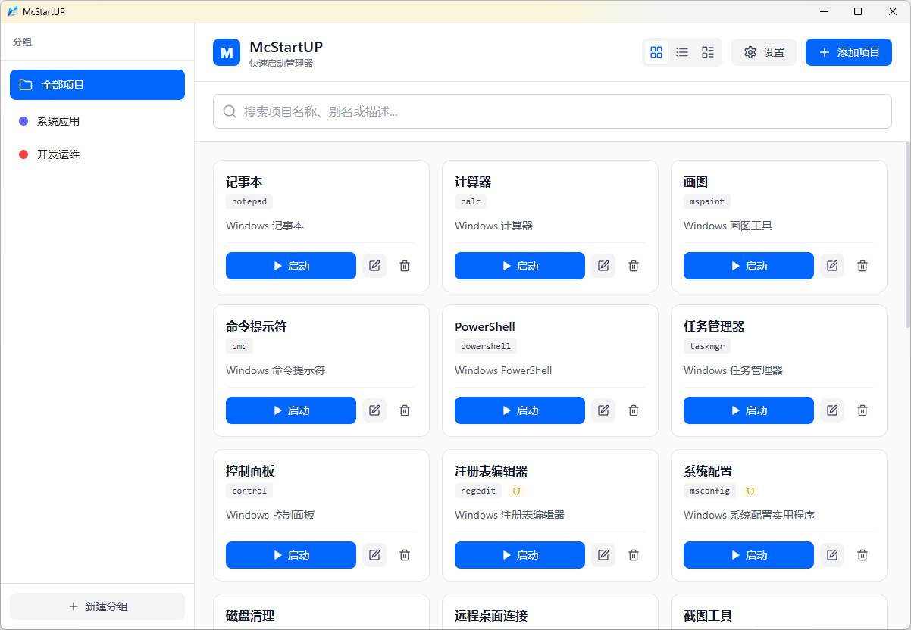
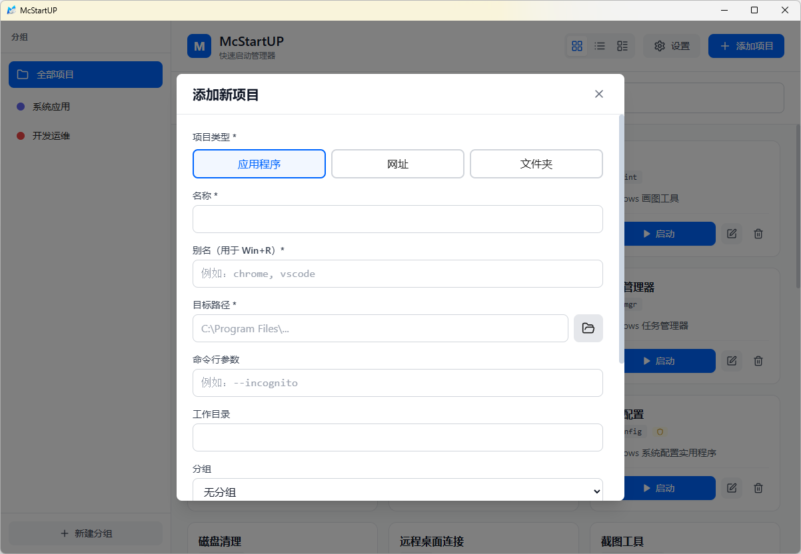
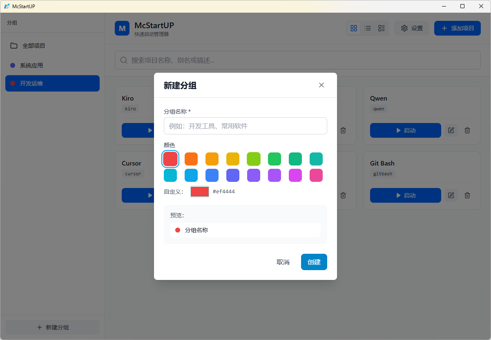
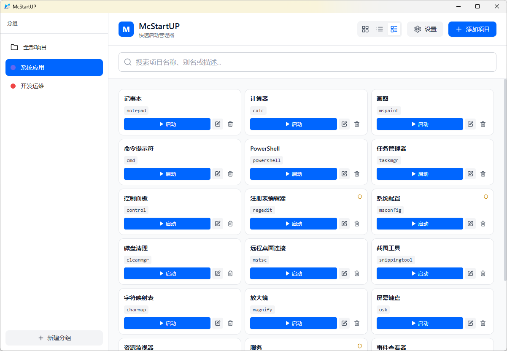
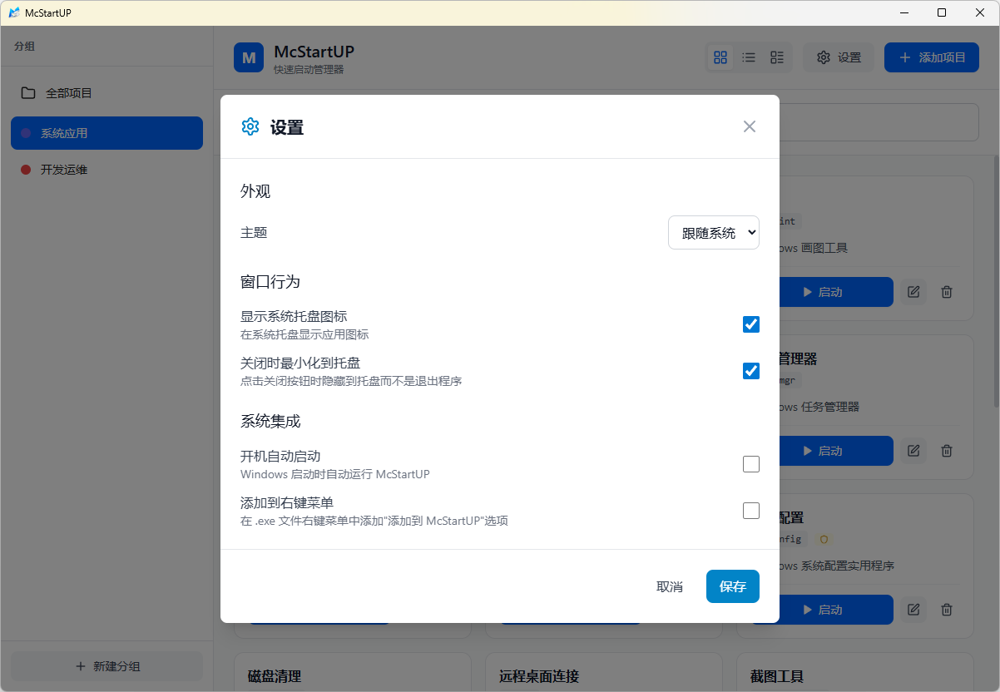

简洁高效的 Windows 快速启动管理器
一键启动常用应用、网址、文件夹和脚本
支持 Win+R 快捷方式，让效率触手可及
为每个应用设置别名，按 Win+R 输入别名即可快速启动，无需记住复杂路径
支持拖拽 .exe、.lnk、文件夹到窗口，自动识别并预填充信息，添加应用从未如此简单
支持应用程序、网址、文件夹和脚本，统一管理所有常用资源
支持 .bat/.ps1/.ahk 脚本，可直接输入脚本内容或选择文件，一键执行自动化任务
自定义分组和颜色标签，支持拖拽排序，让你的启动项井井有条
网格、列表、紧凑三种视图自由切换，适应不同使用场景和个人偏好
支持开机自启、系统托盘、右键菜单集成，深度融入 Windows 工作流
让自动化任务触手可及，提升工作效率
文件路径模式：选择已有脚本文件
直接输入模式：在界面中直接编写脚本内容
批处理 (.bat)：简单快速的系统命令
PowerShell (.ps1)：强大的自动化脚本
AutoHotkey (.ahk)：键盘鼠标自动化
• 显示/隐藏执行窗口
• 以管理员权限运行
• 自定义工作目录
• 传递命令行参数
一键清理临时文件、回收站、浏览器缓存，释放磁盘空间
快速查看 CPU、内存、磁盘使用情况，网络连接状态
定时备份重要文件到指定位置，支持增量备份和压缩
检测网络连接、DNS 解析、ping 测试，快速定位网络问题
一键启动数据库、启动服务、编译项目，快速进入开发状态
使用 AutoHotkey 创建自定义快捷键，提升操作效率





快速启动 Office、邮件客户端、项目管理工具，一键进入工作状态
管理 IDE、终端、数据库工具、API 测试工具，开发环境一键就绪
整理游戏库、游戏平台、语音工具，快速切换游戏模式
管理 PS、AI、Figma 等设计工具，项目文件夹快速访问
创建批处理、PowerShell、AutoHotkey 脚本，一键执行备份、清理、部署等任务